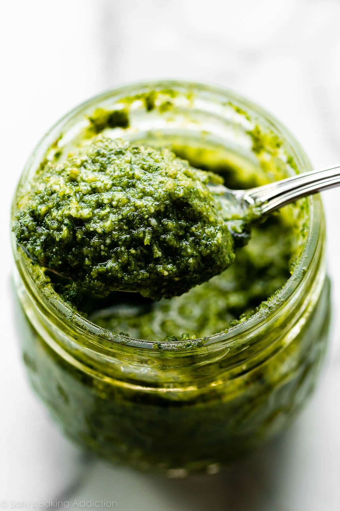

Homemade Pesto

Description
A wonderfully versatile and tasty sauce/spread made from a handful
of flavorful ingredients. It comes together in a few minuts and tastes
worlds better than store-bought because it's so fresh.
Ingredients
- 2 cups fresh basil
- 1/4 cup pine nuts, sunflower seeds, or walnuts
- 2 crushed garlic cloves
- 3/4 cup olive oil
- 1/2 cup grated parmesan
- Salt and pepper to taste
Steps
- Add basil, nuts, garlic, olive oil, parmesan, salt, and pepper to a food processor.
- Process until homogenous.
- Serve on your favorite pasta or spread on sandwiches.